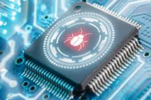

Home
Welcome to Malwares, These are the attackers of your device. Sometimes they steal cookies, passwords, files & others. This page should teach you what each type of malware does & how to avoid it.
Types of Malware
1. Virus
Viruses are the most common form of malware, used to find a Host System to Delete Files, Destroy Systems, Steal Data, etc.
How do we avoid it? Use a reputable antivirus & keep it up to date aswell as updating your system to close off any possible loopholes that they can come from.
2. Worms

Worms is a form of malware that specializes in infecting Systems & spreading quickly, Stealing Data on the way.
How do we avoid it? Stay away from anything that looks suspious & get an antivirus in case you are using public wifi.
3. Trojan Horse

Trojans is a form of malware that specializes in pretending to be an app like "Free Minecraft" that afterwards will Steal Data & Passwords
How do we avoid it? Only get your Programs from Trusted Sources & obviously have an Antivirus installed.
4. Ransomware
Ransomware is a form of malware that locks files, data for ransom. Often asking for cryptocurrency like Bitcoin.
How do we avoid it? Lock your files in a Cloud Storage like Google Drive or Onedrive, so in case of an attack you keep your files.
5. Spyware

Spyware is a form of malware that secretly monitors keystrokes, cursor movement, etc. This data can range from credit cards, passwords, just about anything you have inputted before.
How do we avoid it? Be careful when downloading applications you think gives spyware, Aswell as keeping an antivirus and checking your task manager for suspious applications, Like when an application isn't supposed to be running in the background.
6. Adware

Adware is a form of malware that spams ad all over your PC that often leads to malicious websites while eating your PC's performance away.
How do we avoid it? There is tools deticated to removing adware, aswell as ad blockers & antiviruses doing the job.
7. Rootkit

Rootkits is a form of malware that hides in System Files, aswell as giving admin access to attackers so they can modify system settings & installing malware while avoiding detection at the same time
How do we avoid it? There is also tools made to remove rootkits, but some reputable antiviruses come with a rootkit detection system.
8. Keylogger
Keyloggers is a form of malware that keystrokes in order to steal passwords & sensitive info.
How do we avoid it? Have a Password Manager so you don't have to directly type it, aswell as checking for suspious activity.
and what we explained was just the most popular & known types of malware, you might be asking "what are some trusted antiviruses?", you can click here to see the page!